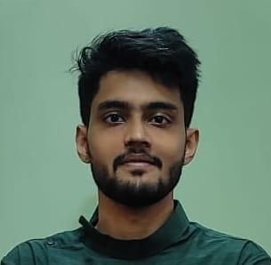

LAKSHMIKANTH BS

SOFTWARE ENGINEER - .NET
7259201121 | BENGALURU, 560062 | BSLAKSHMIKANTH673@GMAIL.COM
Objective
Enthusiastic Software Engineer having 4 years of professional experience, offering a solid grasp of multiple programming languages and software mainly focused on .Net based applications. Excels at developing web application end-to-end. Brings on board hands-on experience in front-end and back-end development, the capacity to explain complex concepts to lay audiences, and a proven facility to quickly master new concepts. Currently seeking opportunity in an organization where my skills can be utilized and enhances my technical knowledge.
Skills and abilities
- Functional area: C#, .Net, Java/J2EE
- Frameworks: .Net Framework, ASP.net core, Entity Framework, MVC 5
- Web technologies: Html5, CSS3, JavaScript, jQuery, Bootstrap4, AngularJS
- Databases: Oracle, MS SQL Server, MySQL
- IDE MS Visual Studio, Eclipse, VS Code, Telerik Reporting IDE
- Other Skills: Android development, Full Stack web, R, Azure
Experience
NTTDATA, BENGALURU
Software Engineer - .Net | March 2020 - Present
- 4 years of experience in application architecture, planning & design, development & deployment of web-based applications using full stack .Net technology
- 1 plus years of extensive experience in eliciting business requirements, analyzing & translating into requirement document in concise manner
- Experience in conducting POCs for various client requirements.
- Developing dynamic reports based on client requirements
- Creating scalable UI using front end tech
- Designing database structure, developing tables, stored procedures triggers, functions required for the project
- Responsible for deployment of project to production environment
Trainee Software Engineer | November 2019 – March 2020
- Bootcamp on .Net application development, C# programming language, Console based applications, MS SQL Server, Entity framework
- Trained on developing Single page applications using Angular
- Developed MVC 5 web application using .Net framework to manage client’s activities
Data Analyst Intern - R Programming | July 2018 – September 2018
- Worked on Data Analysis using R Studio and R Programming language for interpreting vast amount of data from multiple data source like excel and using statistical techniques to build reports using R libraries for data visualization
Education
VISVESVARAYA TECHNOLOGICAL UNIVERSITY-KSIT (2019)
Bengaluru | Bachelor of Engineering - Computer Science – 74.44 %
VIJAYA COMPOSITE (2015)
Bengaluru | 12TH - Physics, Chemistry, Mathematics, Biology – 80 %
VIVEKANANDA EDUCATIONAL CENTRE (2013)
Bengaluru | 10TH – Science, English, Social Studies – 80.44 %
Projects
1) ANY APP ANYWHERE MATURITY MANAGEMENT(A3MM)
.NET FULL STACK (JAN 2023 – JAN 2024)
- Gathering business requirements for the project from stakeholders
- Created database schema, tables, stored procedures in MS SQL Server
- Designed all the web pages required for the application
- Developed business logic using .net framework and MVC architecture
- Contributed in unit testing of overall application
- Revised, enhanced the application to optimize the code
- Created a step-by-step technical documentation which includes all the architecture design, requirement document, workflow, libraries used, validations etc.
- Enhanced my knowledge with respect to SMTP server, integrating it into .net application to trigger mail using Amazon Web Service (AWS) SES
2) INCIDENT NAVIGATOR
.NET FULL STACK (APRIL 2022 – NOV 2022)
- Incident Management System
- Understand technical requirements from Team lead
- Develop presentable POC’s to showcase stakeholders
- Developed business logic using .net and MVC architecture
- Created stored procedures for the project as required
- Integrated Telerik reporting tool into the application, developed dynamic user-friendly reports and charts
- Contributed in UI development
3) IDEA MANAGER
ANALYST AND DEVELOPER (JULY 2021 – DEC 2021)
- Design and development of various modules
- Bug fixing and maintenance of the product.
- Coordinating with team members in optimizing, revising code
- Testing the overall process of the application
4) NFC FOR PAYMENTS
JAVA developer (B.E. Final Year Project - 2019)
- Android Application for digital payments using NFC card and Paytm gateway
- Designed and developed various modules of the product
- User can store their unique Paytm customer ID into the NFC card through the app
- Payments can be made by tapping NFC card on the NFC enabled device
- Interacted with Paytm employees and retrieved Paytm Test API for the project.
- Advantage of the product is contactless lite payments
Publication
NFC FOR PAYMENTS - THE PROJECT 'NFC FOR PAYMENTS' WAS PUBLISHED TO THE 'IRJET' IN STANDARD FORMAT (17-03-2019).
Seminar
Presented seminar on ‘Handwritten Digit Recognition using AI’ system in university.